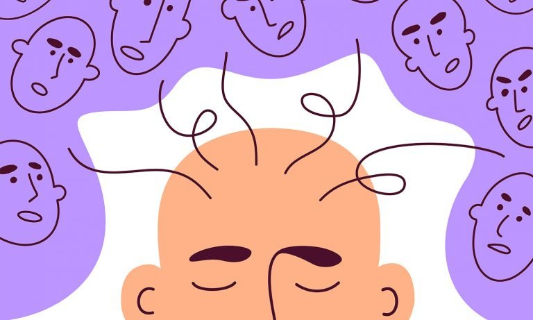

Mental Health Disorder
Mental health disorders, sometimes referred to as illnesses, affect the thoughts, moods and behaviors of those impacted. Many people have mental health concerns from time to time. But a mental health concern becomes a mental illness when ongoing signs and symptoms cause frequent stress and affect your ability to function.
A history of mental illness in a blood relative, stressful life situations, such as financial problems, a loved one's death or a divorce, an ongoing (chronic) medical condition, such as diabetes, traumatic brain injury such as a violent blow to the head, traumatic experiences, such as military combat or assault, use of alcohol or recreational drugs, a childhood history of abuse or neglect and few friends or few healthy relationships; can influence the onset of depression, anxiety and other conditions.
Mental health disorders may be occasional or chronic. And they affect an individual’s ability to relate to others and function day-to-day. While there are some steps to improve overall mental health, some disorders are more serious and may require professional intervention.
Depression

Depression is classified as a mood disorder. It is a common and serious medical illness that negatively affects how you feel, the way you think and how you act.
Read moreObsessive Compulsive Disorder (OCD)
Obsessive-compulsive disorder (OCD) is a disorder in which people have recurring, unwanted thoughts, ideas or sensations (obsessions) or the urge to do something over and over again (compulsions). Some people can have both obsessions and compulsions. Many people without OCD have distressing thoughts or repetitive behaviors. However, these thoughts and behaviors do not typically disrupt daily life. For people with OCD, thoughts are persistent, and behaviors are rigid.
Read morePost Traumatic Stress Disorder (P.T.S.D)

Post-traumatic stress disorder can occur in a person who has witnessed an extraordinarily terrifying and potentially deadly event. After the traumatic event, the person re-experiences all or some of it through dreams or waking recollections and responds defensively to these flashbacks. New behaviors develop related to the trauma, such as sleep difficulties, hyper-vigilance, thinking difficulties, severe startle response, and agitation. People with P.T.S.D have intense, disturbing thoughts and feelings related to their experience that last long after the traumatic event has ended.
Read moreStress
Stress is how the brain and body respond to any demand. In a dangerous situation, stress signals the body to prepare to face a threat or flee to safety. In these situations, your pulse quickens, you breathe faster, your muscles tense, and your brain uses more oxygen and increases activity—all functions aimed at survival and in response to stress. In non-life-threatening situations, stress can motivate people, such as when they need to take a test or interview for a new job.
Read moreSchizophrenia

Schizophrenia is a chronic, severe mental disorder that affects the way a person thinks, acts, expresses emotions, perceives reality, and relates to others. Though schizophrenia isn’t as common as other major mental illnesses, it can be the most chronic and disabling. Schizophrenia involves psychosis, a type of mental illness in which a person can’t tell what’s real from what’s imagined. It involves distortions in thinking, perception, emotions, language, sense of self and behaviour. At times, people with psychotic disorders lose touch with reality. The world may seem like a jumble of confusing thoughts, images, and sounds. People with schizophrenia often have problems doing well in society, at work, at school, and in relationships.
Read more